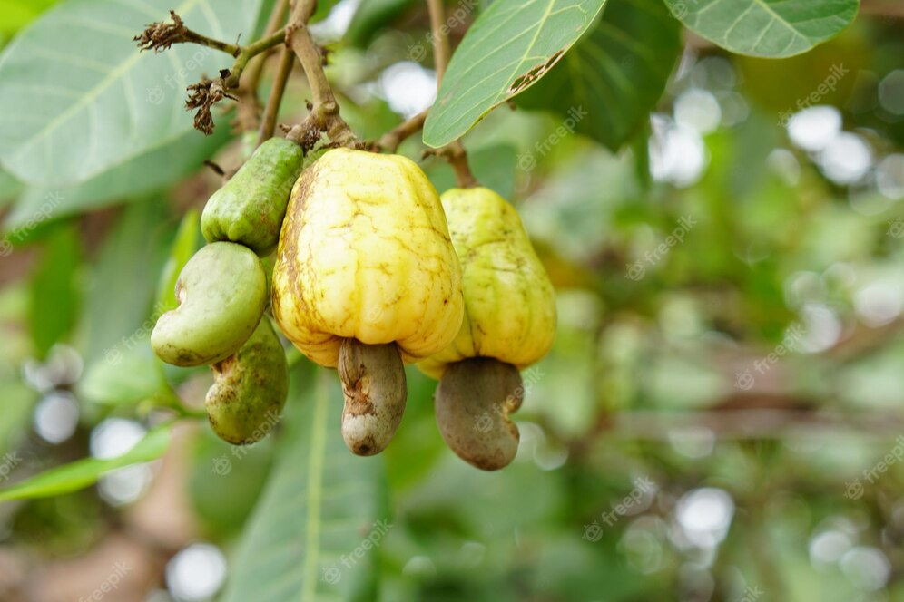

Agri Info

Cultivating Food Crops
Black Pepper
Black pepper cultivation techniques can vary depending on the specific climate and growing conditions. Here are some general techniques for black pepper cultivation: Climate and Soil Requirements: Black pepper thrives in a tropical climate with a temperature range of 75°F to 95°F (24°C to 35°C) and high humidity. It is typically grown in well-drained soils rich in organic matter. Propagation: Black pepper is usually propagated through stem cuttings or vine cuttings. Select healthy, disease-free cuttings from mature plants for propagation. Land Preparation: Prepare the land by clearing weeds, rocks, and debris. Black pepper is often grown on support structures such as poles or trellises. Install these supports before planting.

Cultivating Food Crops
Wheat
Wheat cultivation techniques can vary depending on the specific wheat variety and growing conditions. Here are some general techniques for wheat cultivation: Site Selection: Choose a site with good sunlight exposure and well-drained soil. Wheat grows best in loamy or sandy loam soils with a pH range of 6.0 to 7.5. Soil Preparation: Prepare the soil by plowing or tilling to a depth of 6-8 inches (15-20 cm) to break up compacted soil and create a favorable seedbed. Remove any weeds or debris from the field. Seed Selection: Choose high-quality, certified wheat seeds that are adapted to your region and intended use. Consider factors such as yield potential, disease resistance, and environmental adaptability..

Cultivating Food Crops
Cherries
Cherry cultivation techniques can vary depending on the specific cherry variety and growing conditions. However, here are some general techniques for cherry cultivation: Site Selection: Choose a site with good sunlight exposure, well-drained soil, and good air circulation. Cherries thrive in areas with a cold winter climate and moderate summer temperatures. Soil Preparation: Prepare the soil by removing weeds, rocks, and debris. Cherries prefer loamy or sandy soil with good drainage. Incorporate organic matter, such as compost, to improve soil fertility and structure. Variety Selection: Select cherry varieties that are adapted to your climate, taking into consideration factors such as cold hardiness, disease resistance, and desired fruit characteristics (e.g., sweet or sour cherries)..

Cultivating Food Crops
Cashew Nut
Cashew cultivation techniques can vary depending on the specific climate and region. However, here are some general techniques for cashew cultivation: Climate and Soil Requirements: Cashew trees thrive in tropical and subtropical regions. They require a warm climate with temperatures between 20°C to 35°C (68°F to 95°F). Cashew trees prefer well-drained sandy or sandy loam soil with a pH level between 6.0 and 6.5. Site Selection: Choose a site with good sunlight exposure and protection from strong winds. Avoid areas prone to waterlogging or flooding. Propagation: Cashew trees are commonly propagated through grafting or air layering. Select healthy and disease-free scions or air layering branches for propagation..

Cultivating Food Crops
Rice
Rice cultivation techniques can vary depending on the specific rice variety and growing conditions. Here are some general techniques for rice cultivation: Land Preparation: Prepare the field by leveling the land to ensure uniform water distribution. Remove weeds, rocks, and debris from the field. Seed Selection: Choose high-quality rice seeds that are suitable for your region and desired traits such as yield potential, disease resistance, and grain quality. Consider consulting with local agricultural authorities for recommended varieties. Seedbed Preparation: Start by germinating rice seeds in a separate seedbed or nursery. Prepare a well-drained seedbed with fine soil texture. Maintain adequate moisture and provide shade if necessary until seedlings reach the appropriate stage for transplanting..

Cultivating Food Crops
Tomato
Tomato cultivation techniques can vary depending on the specific tomato variety and growing conditions. Here are some general techniques for tomato cultivation: Site Selection: Choose a site with full sun exposure (at least 6-8 hours of direct sunlight per day) and well-drained soil. Avoid areas prone to waterlogging. Seed Selection: Select high-quality tomato seeds from reputable sources. Consider factors such as disease resistance, growth habit (determinate or indeterminate), and desired fruit characteristics (e.g., size, color, flavor). Seed Starting: Start tomato seeds indoors or in a greenhouse 6-8 weeks before the last expected frost date. Use a seed starting mix and provide adequate warmth (around 70-80°F or 21-27°C) and light for germination and seedling growth..